MATP6620 / DSES6760
Combinatorial Optimization and Integer Programming
Homework 2.
Due: Friday, February 9, 2007.
Penalty for late homeworks: 10% for each day or part of a day.
- Let 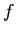 and be defined as follows.
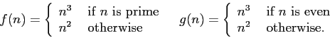
Is either of the following true?
-
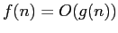.
-
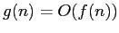.
- Assume you have an algorithm A for finding the minimum weight perfect matching
in a graph with nonnegative edge weights.
How could you use this algorithm to find the maximum weight matching in
a graph 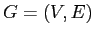 with nonnegative edge weights? (Note: the matching isn't required to be perfect.)
- Assume we have a polynomial time algorithm for determining the optimal
value of a binary knapsack problem
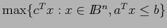.
This algorithm will not tell us the values of the variables in the optimal solution.
Show that we can use this algorithm as a subroutine in a polynomial time
algorithm for finding the optimal solution to a binary knapsack problem.
- Using the undirected Hamiltonian circuit problem,
show that the directed Hamiltonian circuit problem is NP-Complete.
- Given sets 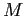 of customers and 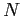 of locations,
integers 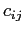 for 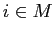 and 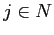 of shipping costs,
integers 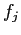 of facility opening costs,
and a scalar 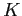,
the uncapacitated facility location problem is to find
a set 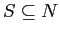 such that
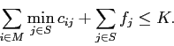
Show that this problem is
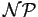-complete.
(Hint: use node packing.)